Planète
Vénus, le jardin d'Aphrodite
La sixième planète des dieux. La touche divine de Vénus ouvre la Voie de Vénus : un monde de 2000 blocs sous un voile de brume rose et nacrée où il pleut des pétales, des nuages roses au-dessus que les sommets percent. Au milieu, la Naissance de Vénus : une conque colossale dans un lagon d'écume. Ici le métal ne se creuse pas : il fleurit.

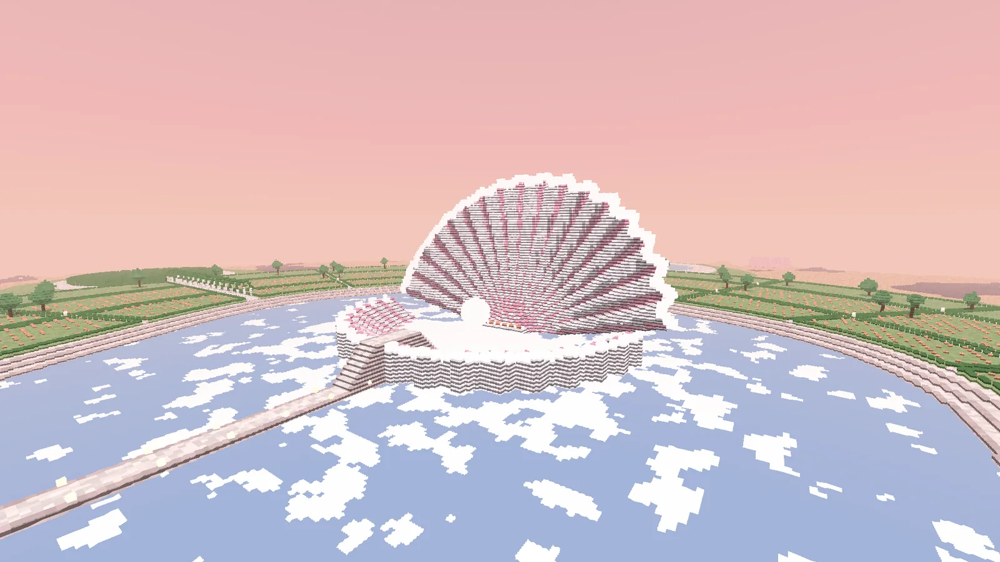

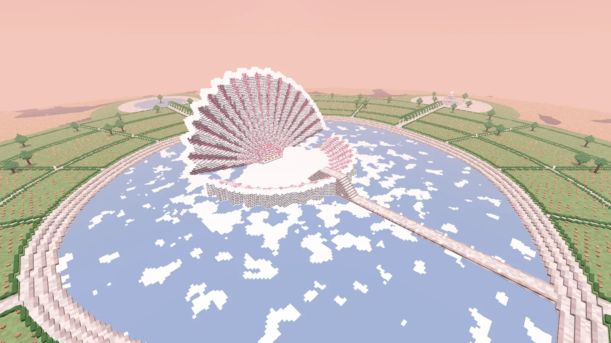

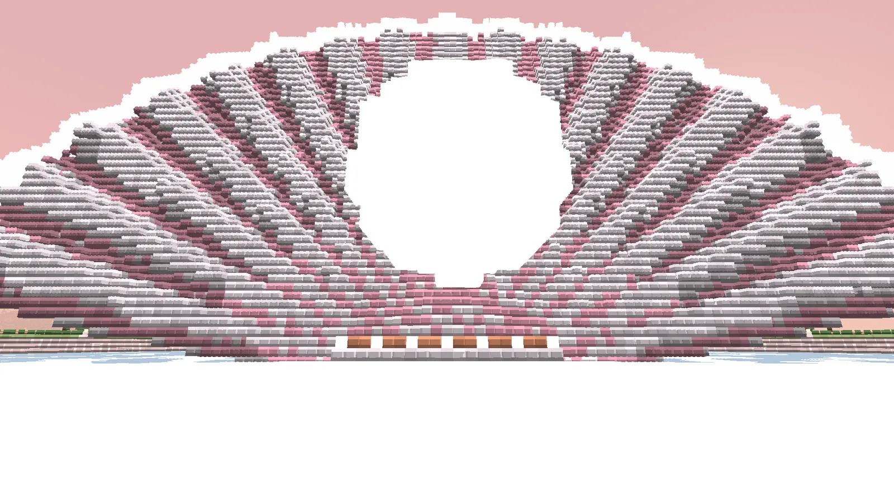

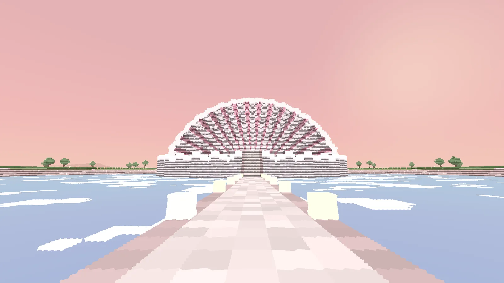

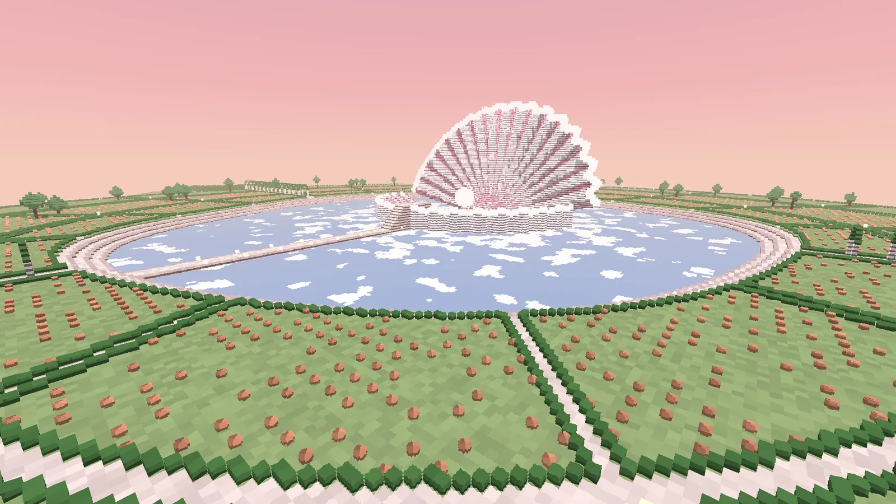

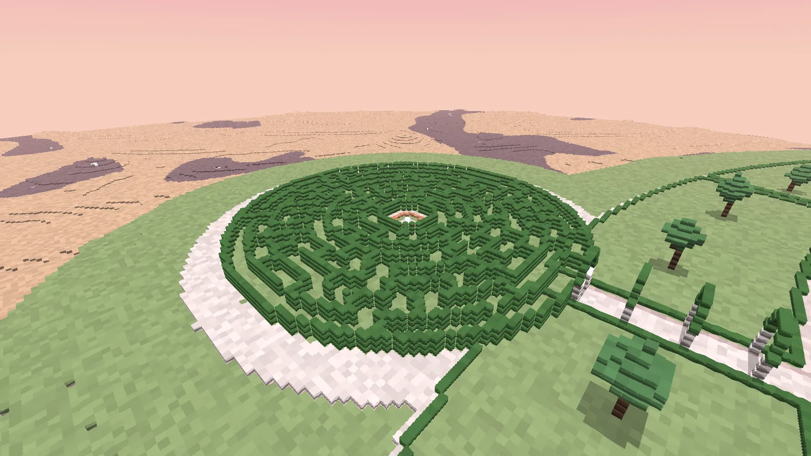

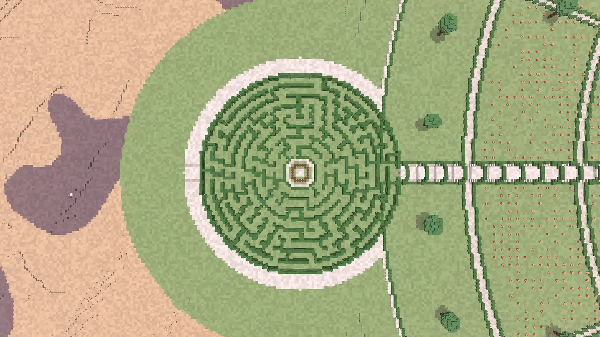

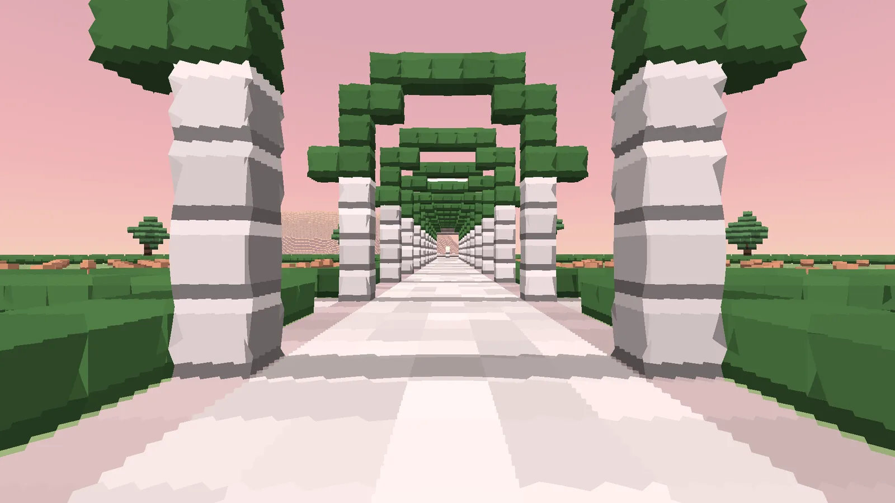

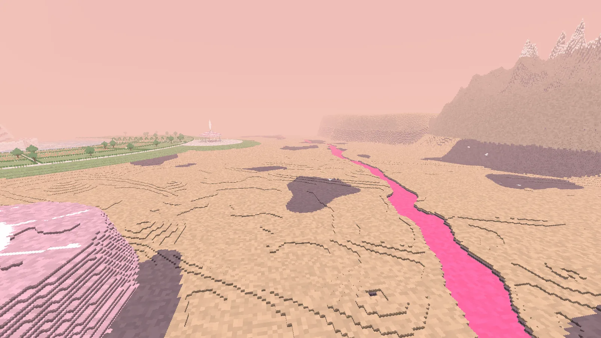

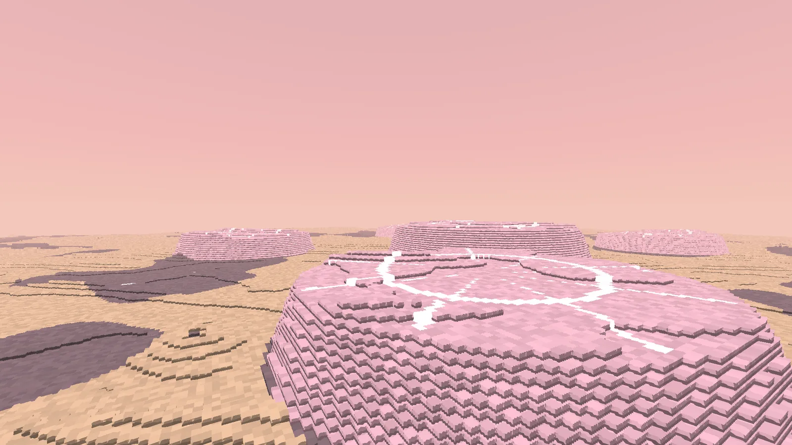

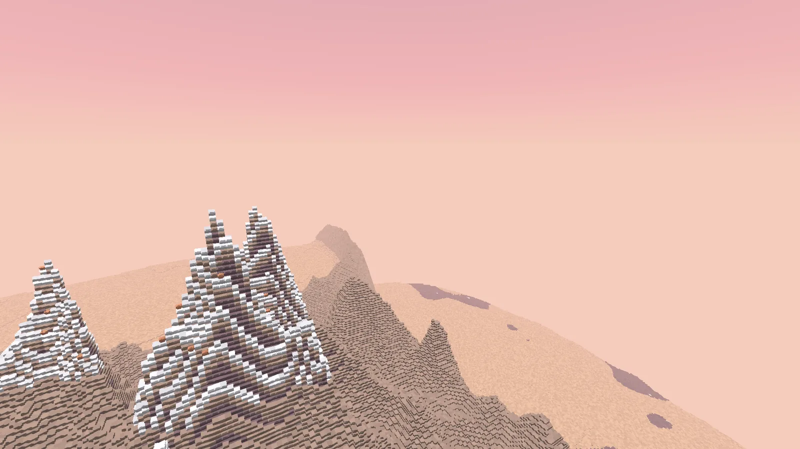

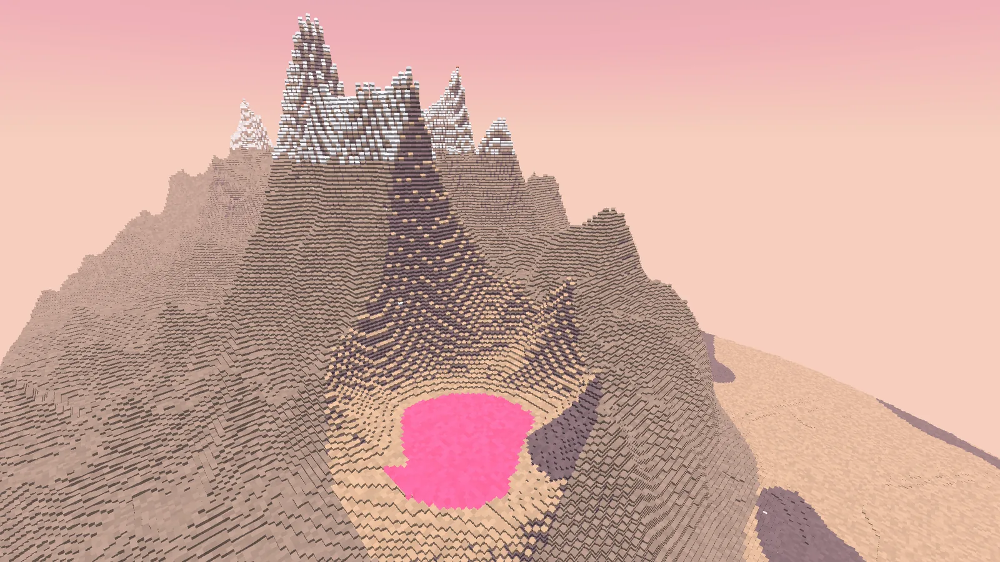

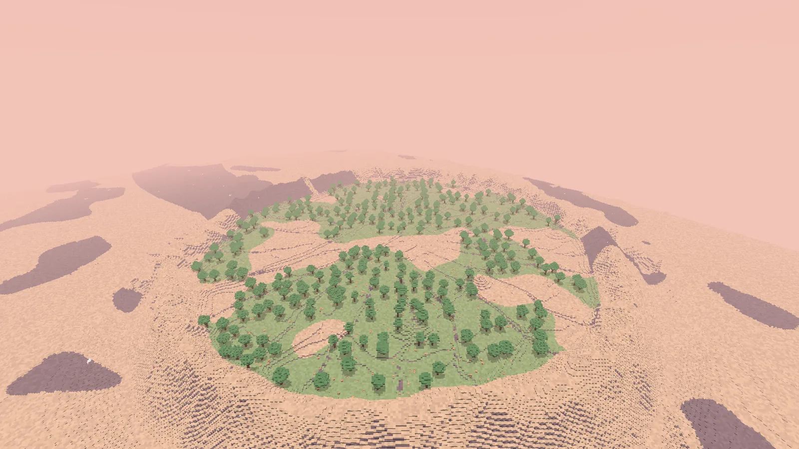

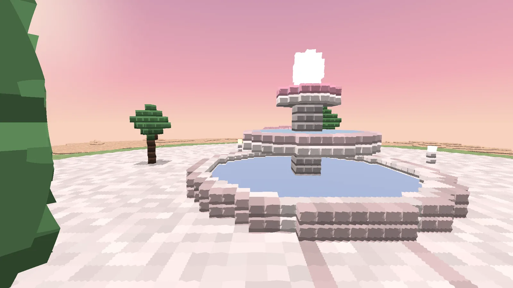

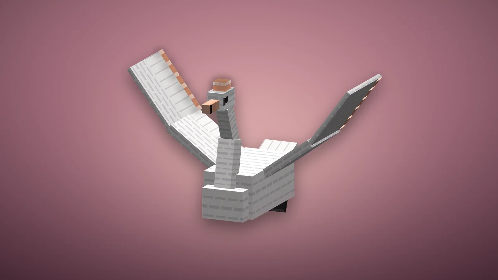

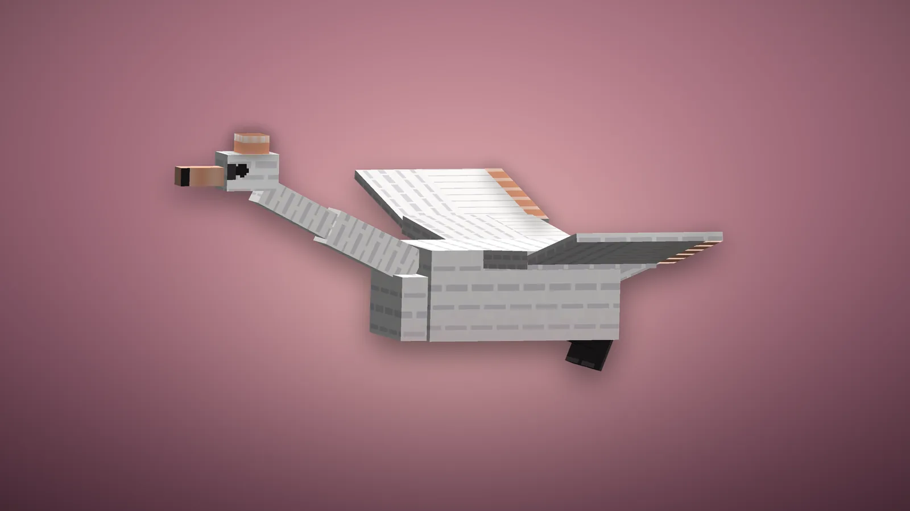

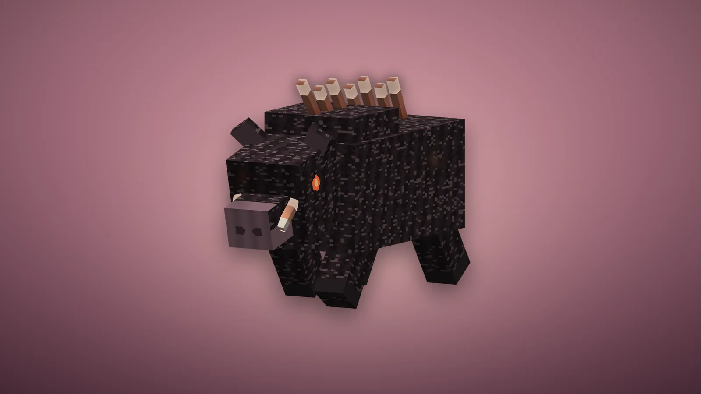

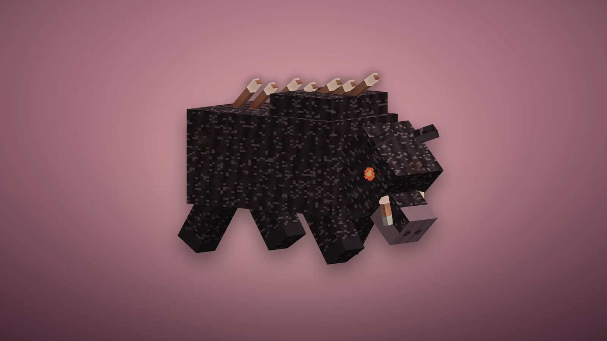
Le voyage
- Les mêmes règles que pour les autres planètes : une fois par jour de jeu, cinq minutes au plus, le compte à rebours en haut à gauche, les invités par [Rejoindre], la touche divine pour rentrer plus tôt.
- On y pèse les neuf dixièmes du poids terrestre : presque comme chez soi.
- L'arrivée : dans le bol de la Conque, sur l'écume, face à la Perle qui flotte, et derrière elle la valve supérieure dressée comme un éventail de soixante blocs, ses côtes de nacre rose. Un escalier franchit la lèvre au nord et mène à la chaussée.
La planète
Elle est la même dans tous les mondes, dessinée d'après le radar de la sonde Magellan.
| Lieu | Où (x, z) | Ce qu'on y trouve |
|---|---|---|
| La Naissance de Vénus | 0, 0 | Le lagon, son eau claire, ses radeaux d'écume ; la Conque de nacre au bord irisé, cent blocs de large ; la Perle, qui flotte et éclaire tout. Les cygnes tournent autour |
| Les Jardins de Cythère | Autour du lagon | Parterres de mousse bordés de haies de roses, roses d'orichalque en massifs, couronne de myrtes, quatre allées sous des arches de roses et de lanternes |
| Le Kiosque de l'Étoile | 0, -262 | Pavillon octogonal à toit en gradins ; l'étoile à huit branches de Vénus au sol, et au-dessus du toit, une étoile de lumière |
| Le Labyrinthe des Roses | 262, 0 | Un vrai labyrinthe rond de haies de trois blocs, entrée à l'ouest ; au cœur, une Fontaine de Cythère et un cercle de roses d'orichalque |
| La Fontaine des Grâces | -262, 0 | Trois vasques d'eau l'une au-dessus de l'autre, une perle au sommet |
| Le Miroir | 0, 262 | Un bassin rond au ras du dallage, une île et son myrte au milieu |
| Les dômes en crêpe | Surtout à l'ouest (-560, -110) | Dômes de quartz rose au sommet plat, fissurés de veines de lumière |
| Baltis Vallis | Du bord est au bord ouest, au nord des jardins | Un chenal sinueux de magma rose sur toute la planète |
| Ishtar Terra : Lakshmi et Maxwell Montes | -200, -660 ; 170, -680 | Un haut plateau bordé de chaînes au nord et à l'ouest ; à l'est les plus hauts sommets de Vénus, plissés en crêtes, blancs de givre d'orichalque au-dessus de Y 214, des roses de métal entre les rochers |
| Cléopâtre | 300, -650 | Un cratère sur le flanc de Maxwell, un lac de magma rose au fond |
| Aphrodite Terra | 500, 360 | Hautes terres froissées en deux réseaux de crêtes : la tessère |
| Artemis Corona et le Bois d'Adonis | -480, 470 | Un anneau de 350 blocs, une douve autour ; dedans, des fractures en étoile et un bois de myrtes, le pays du sanglier |
Les plaines : basalte rose-gris, rides et petits volcans boucliers par centaines, poussière dorée ; à l'ouest de chaque cratère, une parabole de poussière sombre, comme sur la vraie Vénus.
Les créatures
Deux, et elles seules. La planète les fait venir autour de chaque visiteur - en créatif aussi : six sangliers et huit cygnes au plus, aucun en Paisible. Les sangliers ne viennent jamais dans le lagon ni sur son quai ; les cygnes volent partout.
| Créature | Vie | Dégâts | Ce qu'elle fait | Butin |
|---|---|---|---|---|
| Sanglier d'Adonis | 80 | 9 (13 en charge) | La bête qu'Arès envoya tuer Adonis : grand comme une charrette, soies noires, une crête de piquants d'or rose, des défenses d'orichalque, des yeux de braise. De loin, il baisse la tête et gratte le sol une seconde - le moment de s'écarter - puis charge en ligne droite : ce qu'il rencontre est encorné et projeté. S'il heurte un mur, il reste étourdi deux secondes. | 2 à 4 pétales d'orichalque |
| Cygne de Cythère | 36 | 4 (bec) | Un des cygnes blancs du char d'Aphrodite, grand comme un cheval, couronne d'or rose, cinq blocs d'envergure. Il ne fait de mal qu'à qui le frappe. Apprivoisable : un pétale d'orichalque, une chance sur trois. Apprivoisé, clic droit pour le monter : il vole où vous regardez (avancer vers le haut ou le bas, sauter pour monter), une quinzaine de blocs par seconde. Laissé seul, il plane sur place. Un pétale le soigne. | 1 à 2 pétales |
Le Butin augmente les pétales. Tués par un joueur, ils ont aussi 5 % de chances de laisser un Corselet ou des Cnémides de Cythère : c'est la seule façon de les avoir.
L'orichalque, et les roses
L'orichalque de Vénus vient en pétales. Deux sources : le givre d'orichalque, une gelée de métal qui couvre les sommets de Maxwell et court en veines dans la roche (pioche en fer : 1 ou 2 pétales), et surtout la rose d'orichalque, une rose de métal aux feuilles vert-de-gris. Épanouie, elle donne 2 ou 3 pétales : cassée, elle rend aussi sa bouture ; cueillie (clic droit), elle reste et refleurit. Plantée dans la mousse, la poussière dorée, le givre ou la terre, elle ne pousse que sur Vénus : quatre âges, environ trois minutes en tout. Quatre pétales pressés font un lingot.
Les blocs
| Bloc | Où | Outil |
|---|---|---|
| Basalte de Vénus, Régolithe doré, Tessère, Pierre ardente | Le sol, les hautes terres, les profondeurs | Pioche ; pelle |
| Givre d'orichalque | Sommets et veines. Il brille | Pioche en fer |
| Magma rose | Baltis Vallis, Cléopâtre. Brûle qui marche dessus sans s'accroupir ; lumière 12 | Pioche |
| Quartz rose, Quartz rose veiné | Les dômes. Le veiné luit ; 4 pétales autour d'un quartz en font | Pioche |
| Écume de mer | Le lagon et le bol de la Conque. Amortit les chutes | Pelle |
| Nacre de Vénus, Nacre rose, Nacre irisée, Bloc de perle | La Conque et la Perle. L'irisée (8 nacres autour d'une perle) luit, la perle donne une lumière maximale | Pioche |
| Mousse de Cythère, Haie de roses, myrte (bûche, feuilles, planches) | Les jardins, le Bois d'Adonis | Houe ; hache |
| Marbre de Paphos, poli, briques, escalier, dalle, muret, sculpté (la coquille), colonne | Les jardins. 8 quartz roses autour d'un pétale donnent 8 marbres | Pioche |
| Bloc d'orichalque | 9 lingots ; base de balise | Pioche en fer |
d'orichalque
d'orichalque
perle
d'orichalque
d'orichalque
Lanterne de l'Étoile du Berger
Une cage d'orichalque, et dedans l'étoile à huit branches qui respire. Lumière 15.
d'orichalque
d'eau
d'orichalque
marbre
marbre
marbre
marbre
Fontaine de Cythère
Une vasque de marbre, une coquille dressée, une eau qui scintille. Qui se tient à 5 blocs d'elle guérit doucement (Régénération).
La Parure de Cythère
Pas de plaques : de la soie rose sous une résille d'or rose, des perles aux croisements. Le diadème laisse le visage nu - un cercle d'or, une coquille dressée sur le front avec l'Étoile du Berger allumée à sa charnière, des perles, une rose à chaque tempe, une couronne de myrte derrière ; sur le corselet, le miroir de Vénus brille, le ceste ferme la taille, une coquille sur chaque épaule, et des pétales tombent sans cesse des épaules derrière vous ; les tassettes sont une jupe de pétales, or rose sur soie, qui s'ouvre quand on court ; une vigne de roses grimpe aux cnémides, une coquille garde chaque genou.
| Pièce | Armure | Durabilité | Comment l'avoir |
|---|---|---|---|
| Diadème de Cythère | 3 | 385 | Artisanat : 4 lingots et un bloc de perle |
| Corselet de Cythère | 8 | 560 | Butin des créatures de Vénus : aucune recette |
| Tassettes de Cythère | 6 | 525 | Artisanat : 7 lingots, en jambières |
| Cnémides de Cythère | 3 | 455 | Butin des créatures de Vénus : aucune recette |
Chaque pièce : robustesse 2,5, résistance au recul 10 %, enchantabilité 25 (plus que l'or), réparable à l'orichalque. Les quatre portées ensemble : le monde vous aime - Régénération permanente - et qui vous frappe a une chance sur quatre de tomber sous le charme : 8 secondes durant, il se bat pour vous.
L'Arc d'Éros et le Miroir de Vénus
d'orichalque
perle
d'orichalque
Arc d'Éros
L'arc du fils d'Aphrodite, 640 de durabilité, s'enchante comme un arc. Il tire des flèches ordinaires, qui deviennent d'or en quittant la corde et laissent un scintillement derrière elles. Une créature hostile touchée tombe sous le charme 15 secondes : elle oublie le tireur et se retourne contre ses semblables - un creeper charmé va exploser chez les siens.
d'orichalque
d'orichalque
perle
d'orichalque
d'orichalque
Miroir de Vénus
Le miroir dont la forme est encore son signe, ♀. Clic droit : 8 secondes durant, tout projectile qui arrive à 4 blocs de vous fait demi-tour vers qui l'a lancé ; et l'éclair éblouit les créatures hostiles qui vous regardent (Lenteur III, Faiblesse II, 5 s). 30 secondes de recharge, 48 usages.